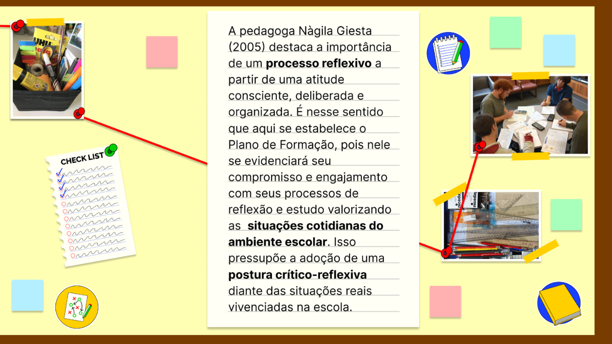
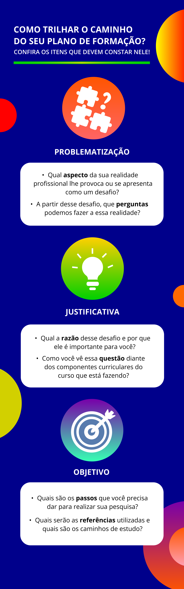

Desenvolvendo o seu Plano de Formação
Na etapa seguinte, cabe a você desenvolver uma argumentação sobre a sua inquietação e a razão de realizar um estudo sobre essa temática. Isso é uma justificativa: nela, você irá contextualizar a sua pergunta demonstrando o motivo pelo qual esse assunto tem relevância na sua realidade.

Título: A importância de uma postura pessoal e profissional que seja crítico-reflexiva
Fonte: Giesta (2005).
Elaboração: Prosa (2024g).
Considerando a metodologia do importante educador brasileiro da pedagogia crítica Paulo Freire (1996), um momento fundamental para o avanço no processo educativo da formação contínua de docentes é o da reflexão crítica sobre a prática. A partir da reflexão crítica sobre a prática atual ou passada, torna-se possível identificar questões e mobilizar o embasamento teórico, a fim de avaliar sua prática e melhorar práticas futuras. É nesse momento que ocorre a interpelação entre teoria e prática, buscando um diálogo constante entre o estudo da literatura em Educação e a prática docente contextualizada.
Estabelecer um objetivo para o desenvolvimento de um Plano de Formação, para além de ser um exercício para sua capacidade reflexiva e de auto-organização profissional, é criar estratégias para o enfrentamento teórico-prático de questões que requerem melhor compreensão, considerando a temática de seu curso de Pós-Graduação lato sensu no campo da Educação Profissional e Tecnológica.
Assim, os objetivos devem contemplar os caminhos pelos quais você passará para realizar seu estudo, sendo um itinerário sobre sua pesquisa.
Neste Plano de Formação, devem constar os seguintes itens:

Título: Como trilhar o caminho do seu Plano de Formação?
Fonte: Prosa (2024h).
Lembrando que você receberá o apoio de um professor formador e da tutoria, que lhe acompanharão desde os primeiros momentos desta Unidade Temática de TCC I.